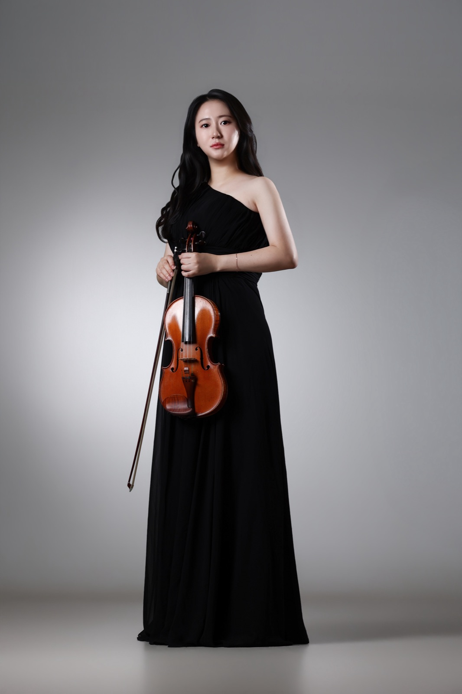
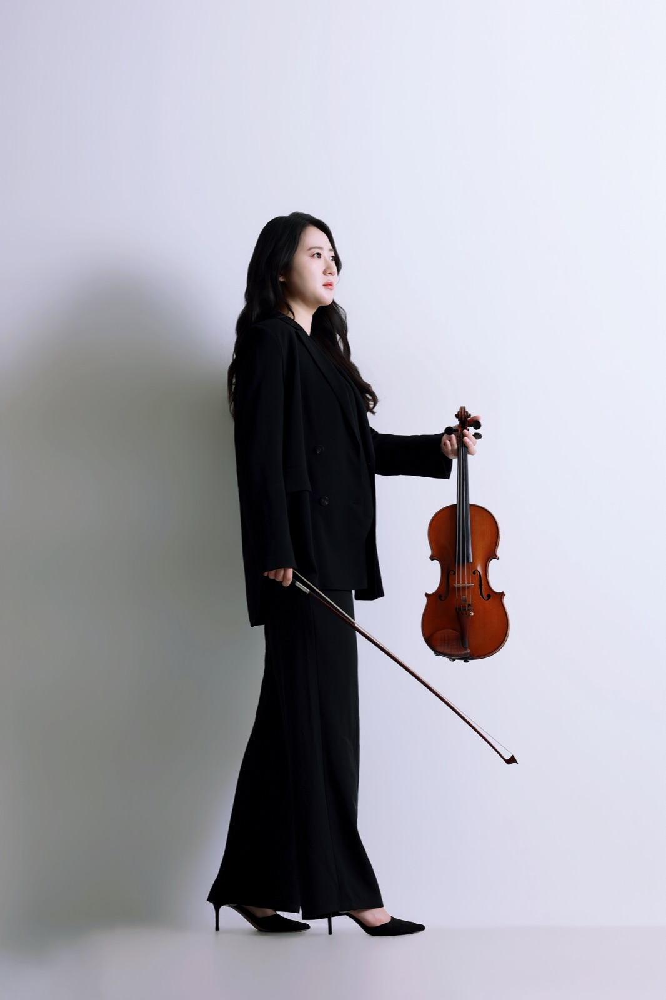
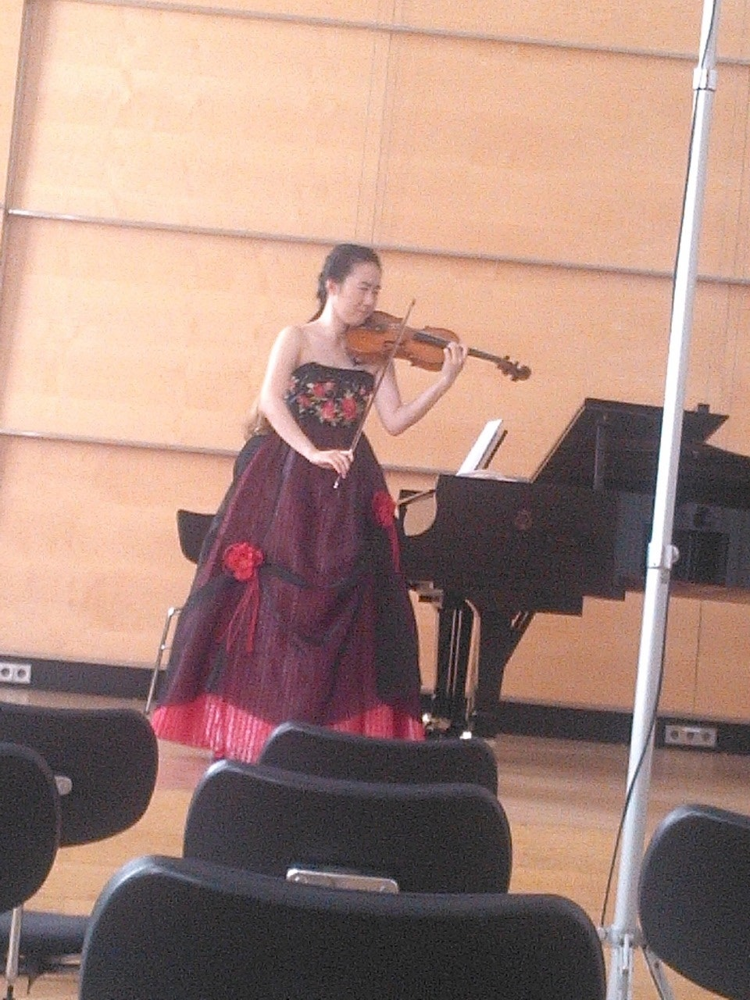
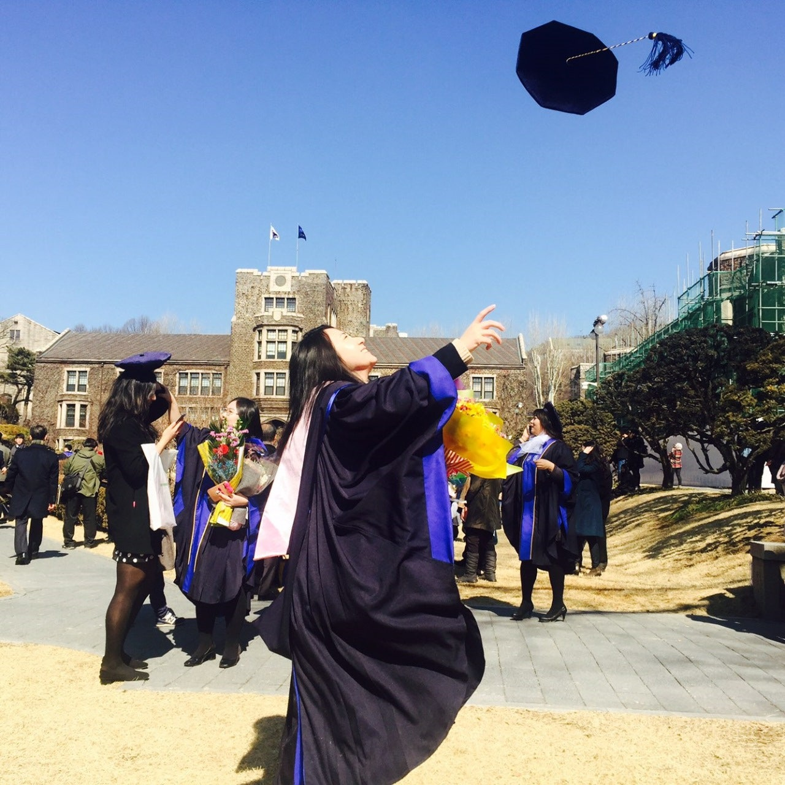
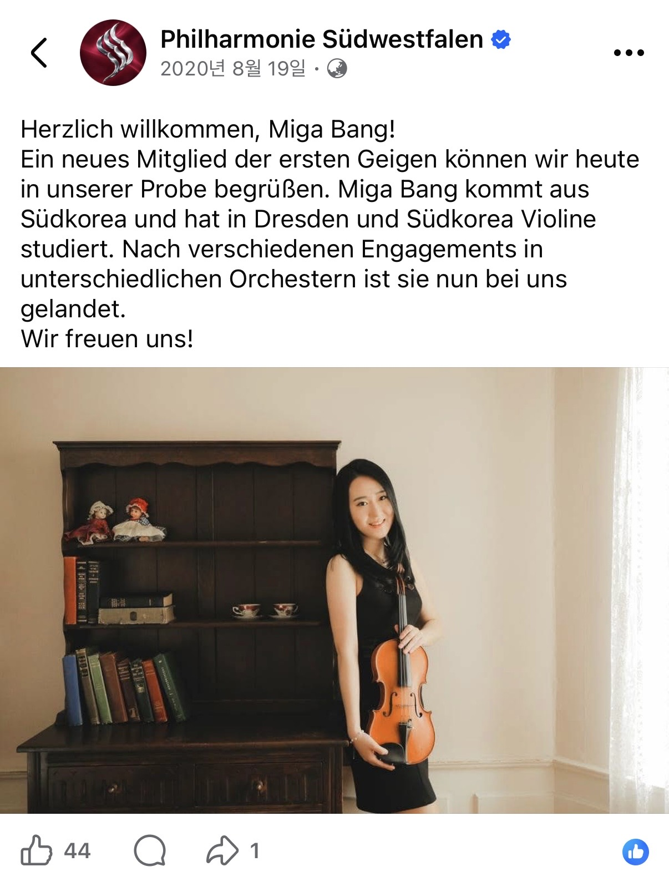

MIGA BANG · 방미가 · VIOLINIST
독일 오케스트라
종신 단원이
직접 가르치는
전공 바이올린
직접 걸어본 길이니까,
그 길을 정확하게 알려 드려요.
LESSON · 서울 · 여수 · 순천 · 광양 레슨

- GermanySolo Master 최우수 졸업Robert Schumann Hochschule Düsseldorf
- Orchestra종신 정단원 역임Südwestfalen Philharmonie
- 2026베를린필하모닉 홀1바이올린 수석으로 연주
- 2025~국제 뮤직 페스티벌 교수진Dresden
- 대상
- 전공을 준비하거나 전공 중인 학생,
취미로 배우시더라도
한 번 배울 때 제대로 배우고 싶은 분 - 지역
- 서울 · 여수 · 순천 · 광양
- 장소
- 상담하면서 편하게 정해요.
- 시간과 수강료
- 학생의 수준과 목표에 맞춰
상담 후 안내해 드려요. - 시작
- 전화나 카카오톡으로 편하게 문의해 주시면
상담 일정을 잡아 드려요.




CAREER · THE ROAD
- 서울: 선화예술학교 · 선화예술고등학교, 졸업
- 드레스덴: Dresden Hochschule für Musik "Carl Maria von Weber", Diplom(전문연주자과정) 졸업
- 서울: 연세대학교 음악대학원, 바이올린 석사 졸업
- 뒤셀도르프: Düsseldorf Robert Schumann Hochschule, Solo Master 최우수 졸업
- 지겐-비트겐슈타인: Südwestfalen Philharmonie (독일), 종신 정단원
- 베를린: 베를린필하모닉 홀, 아티스트포룸 오케스트라 & 베를린 심포니커와 함께 1바이올린 수석으로 연주 (2026)
Six stages · one teacher
그 길을 아는 사람이
정확하게 가르쳐요.
학력
- 🇩🇪Robert Schumann Hochschule DüsseldorfSolo Master 최우수 졸업
- 🇰🇷연세대학교 음악대학원바이올린 석사 졸업
- 🇩🇪Hochschule für Musik "Carl Maria von Weber" DresdenDiplom (전문연주자과정) 졸업
- 🇰🇷선화예술학교 · 선화예술고등학교졸업
독일 오케스트라 일곱 곳과
한국 무대에서 쌓은 경력
| 독일 | Südwestfalen Philharmonie Orchester종신 정단원 역임 |
| 독일 | Neue Philharmonie Westfalen Orchester계약단원 역임 |
| 독일 | Bergische Symphoniker OrchesterAkademie 단원 역임 |
| 독일 | Robert Schumann Philharmonie (Chemnitz 국립극장)Akademie 단원 역임 |
| 독일 | Dresden Staatsoperette객원 역임 |
| 한국 | 서울시 유스오케스트라부수석 역임 |
| 한국 | KBS교향악단객원단원 역임 |
| 2026 | 베를린필하모닉 홀: 아티스트포룸 오케스트라 & 베를린 심포니커와 함께 1바이올린 수석으로 연주 |
| 2026 | CBS 음악FM 출연 |
| 2025~ | 드레스덴 국제 뮤직 페스티벌 교수진 |
| 2016 | 여수 필하모닉 오케스트라 정기연주회 초청 솔로이스트 협연 (예울마루대극장) |
| 2016 | 여수 영재육성음악회 초청연주 (예울마루대극장) |
| 2014 | 여수 예울마루 바이올린 독주회 |
| · | 부암아트홀 영아티스트 초청연주 |
| · | 독일 각지 초청연주: Chemnitz, Pulsnitz, Lichtenberg, Düsseldorf, Solingen, Remscheid, Siegen |
| 2위 | Concorso Internazionale per giovani musicisti G. Campochiaro |
| 2위 | Concorso Internazionale di Musica EUTERPE |
| 3위 | 콘서트월드 콩쿨 |
| 은상 | 선화실내악콩쿨 |
서울과 여수·순천·광양,
전공을 준비하는 분도
제대로 배우고 싶은 분도
함께하는 레슨
레슨 대상
전공을 준비하는 학생은 물론, 취미생도 받아요. 한 번 배울 때 제대로 배우고 싶은 분들을 대상으로 합니다.
- 전공을 준비하는 학생 (예중·예고 입시 준비 포함)
- 이미 전공 중인 학생
- 취미로 배우고 싶으신 분도 편하게 문의해 주세요. 한 번 배울 때 제대로 배우고 싶은 분을 환영해요.
자주 묻는 질문
방미가 선생님께 레슨을 받으려면 어떻게 하나요?
전화(010.2452.7981) 또는 카카오톡으로 문의해 주세요. 상담 후 레슨 장소, 시간, 수강료를 안내해 드려요.
어떤 학생을 가르치나요?
전공을 준비하거나 전공 중인 학생을 가르치고, 취미로 배우시더라도 한 번 배울 때 제대로 배우고 싶은 분이라면 함께해요. 선화예술학교·선화예술고등학교와 독일 국립음대 과정을 직접 거친 연주자가 같은 길을 걷는 학생을 도와드려요.
서울에서도 레슨을 하나요?
네. 서울과 여수·순천·광양에서 해요. 구체적인 장소는 상담하면서 함께 정해요.
예중·예고 입시도 준비할 수 있나요?
예중·예고 입시 준비도 편하게 상담하실 수 있어요. 첫 상담에서 학생의 현재 수준과 목표를 먼저 들어볼게요.
수강료는 어떻게 되나요?
학생의 수준과 목표, 레슨 횟수에 맞춰 상담 후 안내해 드려요.
레슨 장소는 어디인가요?
상담하면서 함께 정해요. 서울과 여수·순천·광양 모두 같아요.
선생님의 이력은 어디서 볼 수 있나요?
연주자 프로필 페이지에 학력, 오케스트라 경력, 수상, 주요 공연을 정리해 두었어요.
레슨 소식은 어디서 볼 수 있나요?
네이버 블로그 violinist_mi(https://blog.naver.com/violinist_mi)에서 볼 수 있어요.
바이올리니스트 방미가(MIGA BANG)는 누구인가요?
방미가(MIGA BANG)는 Düsseldorf Robert Schumann Hochschule Solo Master를 최우수로 졸업하고 독일 Südwestfalen Philharmonie 종신 정단원을 지낸 바이올리니스트입니다. 서울과 여수·순천·광양에서 전공 바이올린 레슨을 합니다.
협연, 마스터클래스, 세션 연주 문의는 어떻게 하나요?
이메일 bmg0304@naver.com으로 보내 주세요. 일정, 장소, 편성과 곡목을 함께 적어 주시면 확인이 빠릅니다.
주요 수상 경력은 무엇인가요?
Concorso Internazionale per giovani musicisti G. Campochiaro 2위, Concorso Internazionale di Musica EUTERPE 2위, 콘서트월드 콩쿨 3위, 선화실내악콩쿨 은상을 수상했습니다.